Designed
Derived the TE101 dimensions and probe locations, then built the complete mechanical assembly in SolidWorks.
I took this instrument from first-principles design through simulation, machining, bench testing, and analysis software. Its purpose was to show that a wire-insert microwave cavity could estimate the effective dielectric constant of insulation used in finished RF cable constructions—not merely show that two samples looked different.
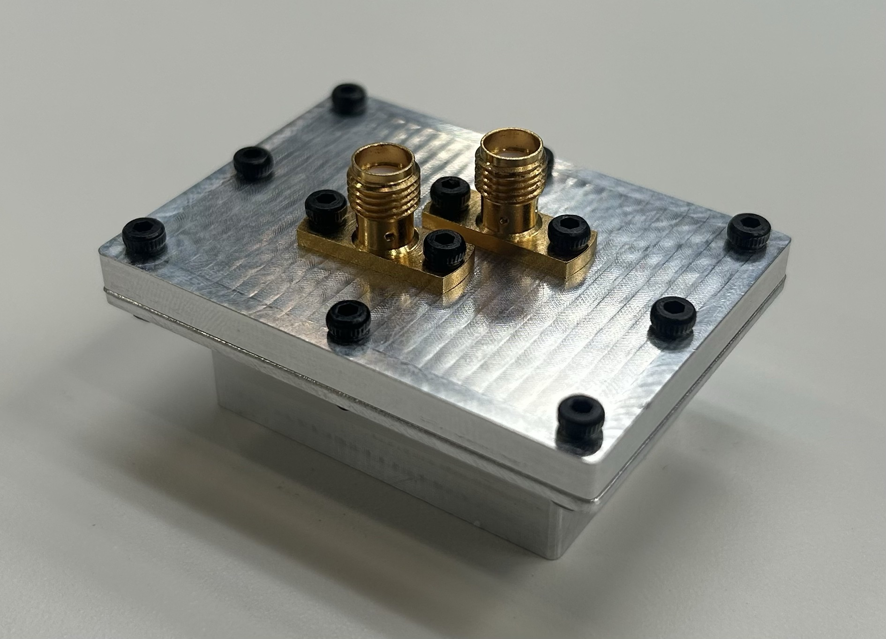
Measured empty-cavity primary resonance
ANSYS primary-mode prediction
Estimated 80-thou ePTFE effective permittivity
Difference from cable velocity-factor result
The project asked whether a compact RF instrument could recover a useful dielectric constant from actual cable-insulation constructions. PTFE tape stretch, overlap, porosity, compression, and trapped air all affect the electromagnetic behavior of a finished cable, so a bulk-material datasheet value does not necessarily describe the construction that is manufactured.
I designed a rectangular cavity around the TE101 mode, passed insulated conductor samples through its strongest practical electric-field region, and measured the shift in its S21 transmission resonance. Combining that shift with the fraction of the cavity’s electric-field energy interacting with the dielectric made it possible to estimate the sample’s effective relative permittivity.
Derived the TE101 dimensions and probe locations, then built the complete mechanical assembly in SolidWorks.
Imported the design into ANSYS HFSS to check resonant modes and electric-field placement before committing to hardware.
Prepared the design for machining and had the cavity manufactured from 6061 aluminum by Protolabs.
Calibrated and ran two-port S-parameter tests on an Anritsu MS46524B VNA with empty, FEP, and ePTFE configurations.
Developed a Python UI to parse Touchstone s2p exports, overlay traces, annotate frequencies, and export analysis plots.
Applied cavity perturbation theory and compared the calculated ePTFE result with an independent cable velocity-factor value.
Port 1 excites the cavity through one SMA probe and Port 2 observes the coupled field through the second. At a resonant mode, S21 rises because more energy is transmitted between the ports; an S11 dip at approximately the same frequency provides supporting evidence that less energy is being reflected at Port 1. I used the S21 peak to identify the resonance because it directly shows transmission through the cavity.
When dielectric surrounds the wire inside the electric field, it increases the stored electric energy and moves the resonance downward. The shift is larger when the material has higher permittivity or when more of the electric field interacts with it. That interaction is represented by the electric-energy filling factor, ηE.
The prototype estimated ηE from the dielectric-to-cavity volume fraction and the TE101 electric-field distribution. This turns a measured S21 resonance shift into an estimate of effective relative permittivity, ε′.
The TE101 mode makes the cavity electric field perpendicular to the wire axis, approximating the radial electric-field relationship that matters in a coaxial cable. Packaging constraints prevented the mathematically ideal probe locations, so I moved the probes to practical positions at 3a/8 and 5a/8 while retaining roughly 65% of the maximum field magnitude at the coupling locations.
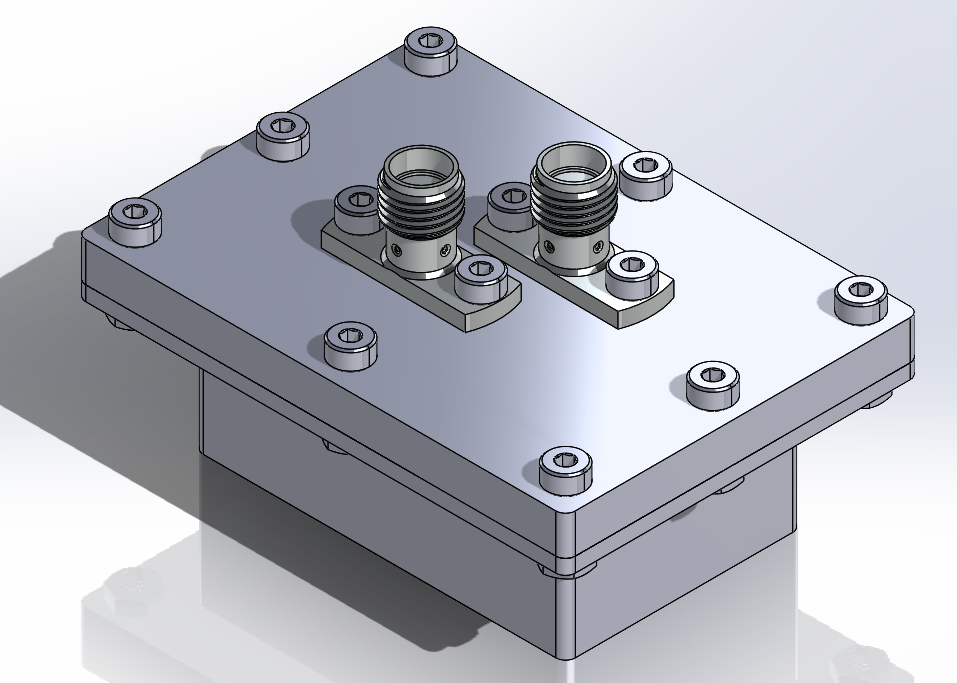
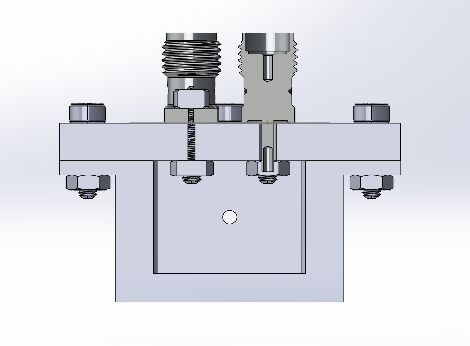
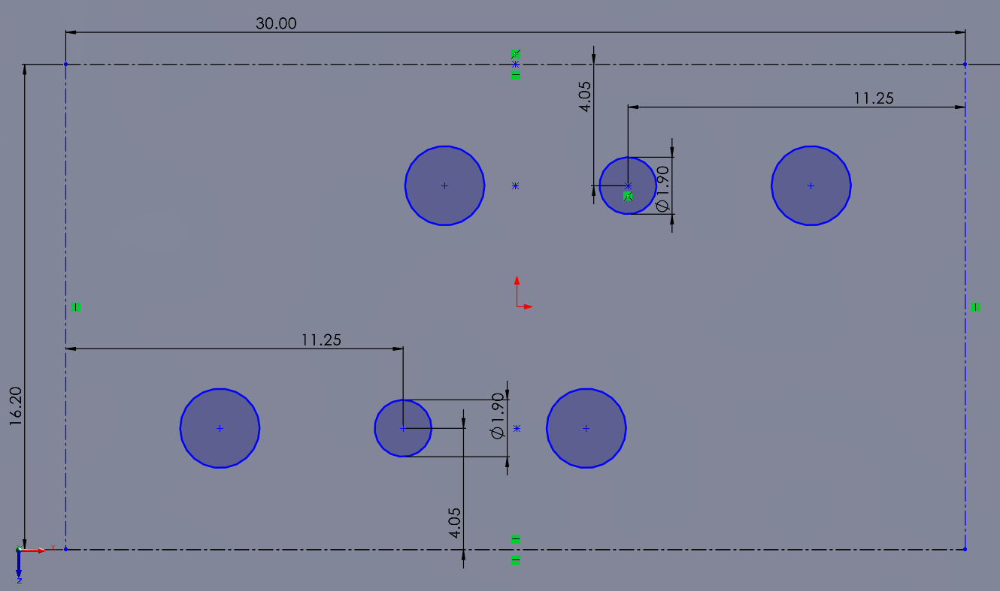
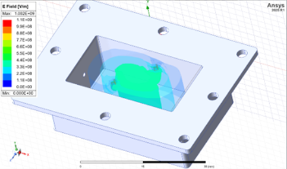
I imported the SolidWorks geometry into ANSYS HFSS and solved for the cavity’s resonant modes and electric-field distribution. The primary simulated resonance was 10.56 GHz, followed by modes near 13.53 and 13.84 GHz.
The simulation confirmed that the selected geometry placed a strong electric field across the sample path and gave me a pre-machining prediction to compare with the physical cavity. The measured primary resonance was 10.25 GHz, a 2.93% difference from the simulated result.
After completing the CAD and simulation, I had the cavity machined from 6061 aluminum, assembled the two 50 Ω SMA flange-mount receptacles, and connected it to an Anritsu MS46524B VNA. I calibrated Ports 1 and 2 before collecting each set of s2p data, first with the cavity empty and then with FEP and ePTFE insulated-wire samples threaded through the center.
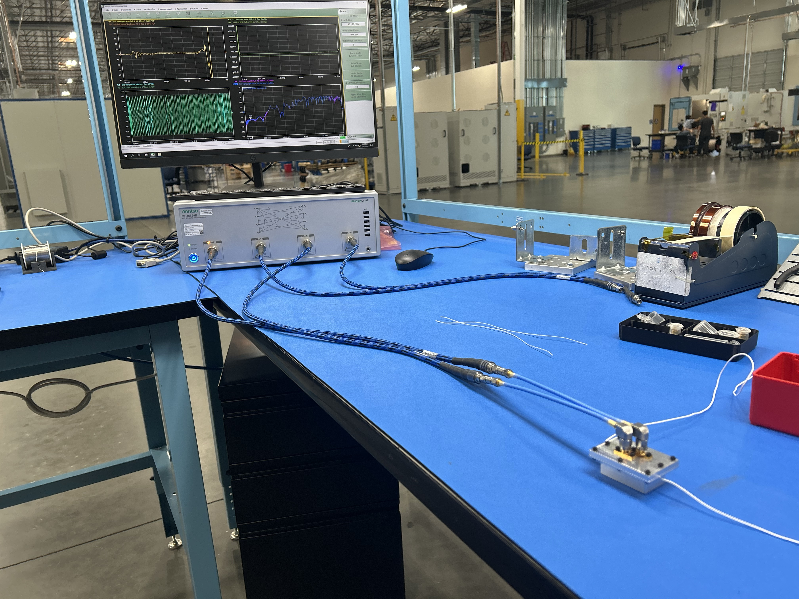
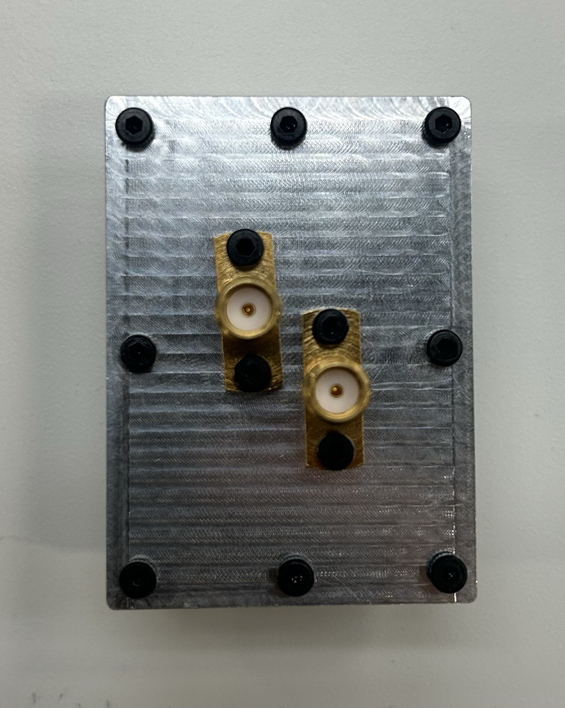
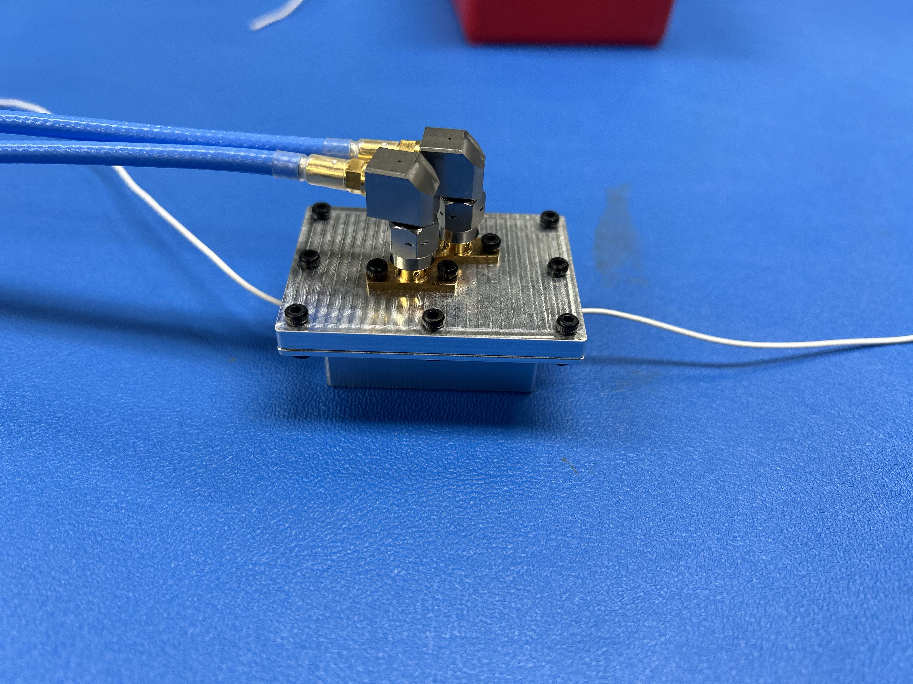
The VNA exported Touchstone s2p files, so I wrote a Python desktop application to turn those raw measurements into repeatable engineering analysis. Its UI let me load data, choose S-parameter magnitude or phase traces, overlay S11 and S21, inspect values near a target frequency, and export publication-ready plots.
That software made the resonance-selection step transparent: the same view could show the S21 transmission peak and supporting S11 behavior, while annotations recorded the exact frequency and dB values used in the calculations.
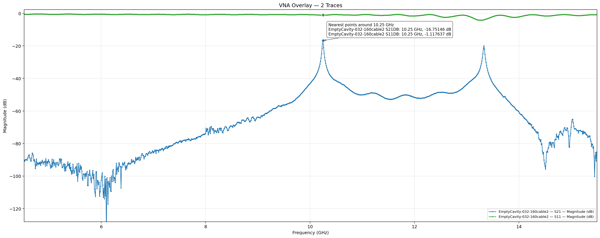
| Configuration | S21 resonance | Frequency shift | Estimated ε′ |
|---|---|---|---|
| Empty cavity | 10.250 GHz | Baseline | — |
| 42-thou FEP | 10.210 GHz | −40 MHz | 2.10 |
| 42-thou ePTFE | 10.238 GHz | −12 MHz | 1.33 |
| 80-thou ePTFE | 10.160 GHz | −90 MHz | 1.60 |
The 42-thou ePTFE sample occupied too little of the field region for a reliable result; the larger 80-thou sample produced the stronger shift and the independently validated estimate.
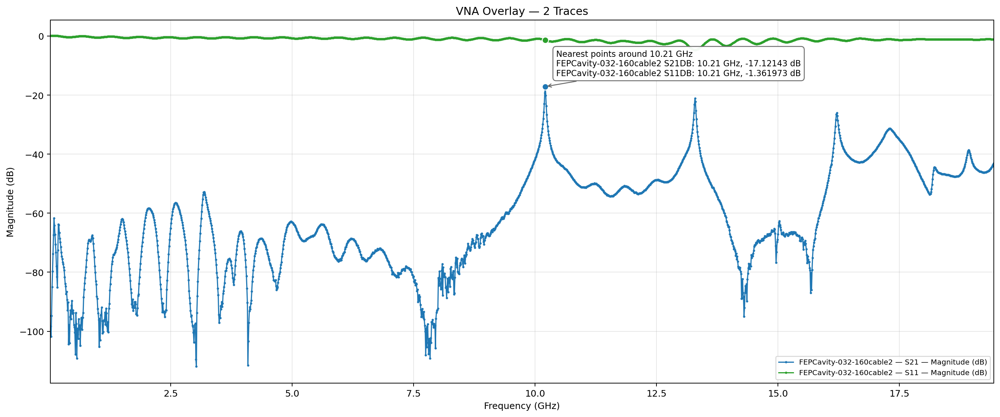
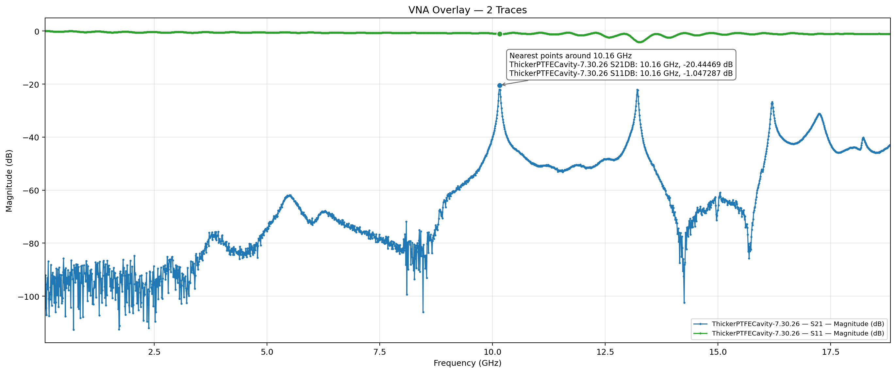
For a nonmagnetic TEM cable, εeff ≈ 1/VF2. The official cable velocity factor therefore implied an effective relative permittivity of 1.6199, while the cavity calculation produced 1.6008. The 1.18% difference was the key proof-of-concept result: the measured S21 shift, field-interaction model, and perturbation equation recovered a realistic dielectric value.
My 12-page report contains the derivation, dimensions, VNA interpretation, complete measurement table, dielectric calculations, and conclusions.
The completed instrument demonstrated a practical route from measured microwave transmission data to an estimated dielectric constant for real RF-cable insulation—and it did so through hardware, simulation, test automation, and analytical validation that I owned as one connected engineering system.